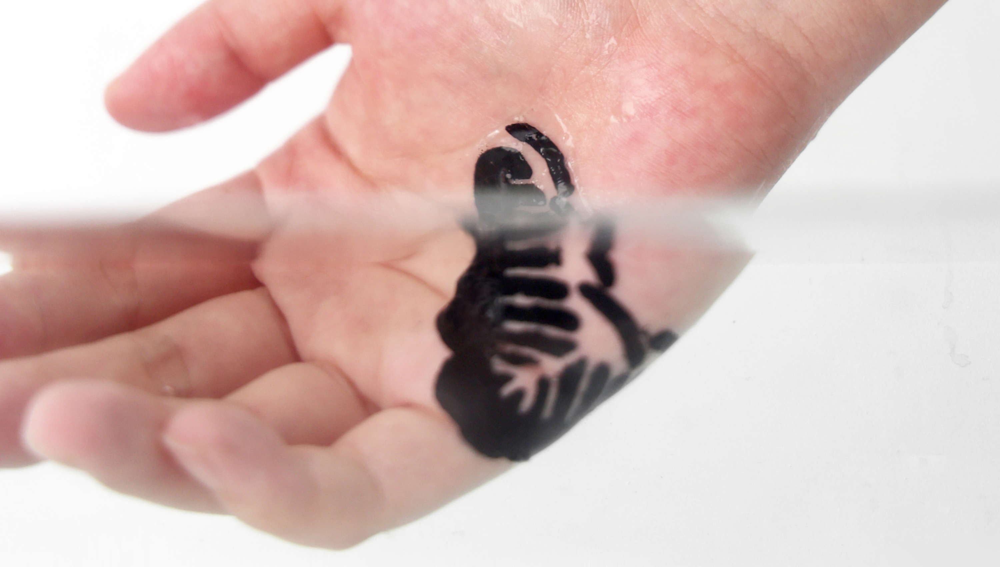
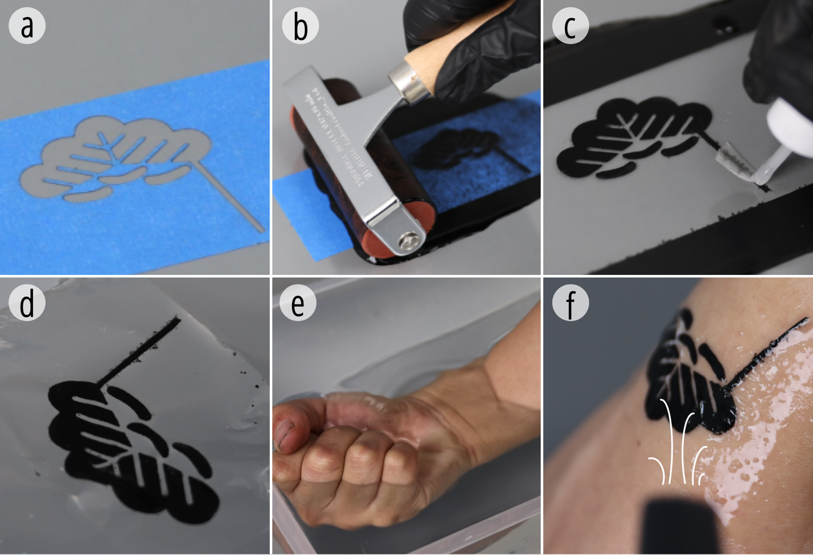
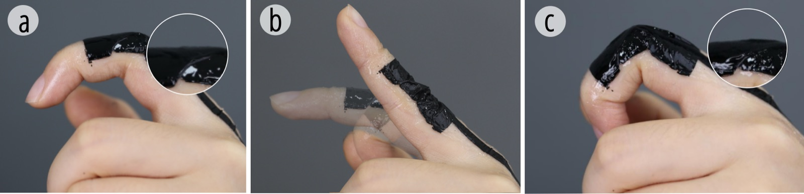
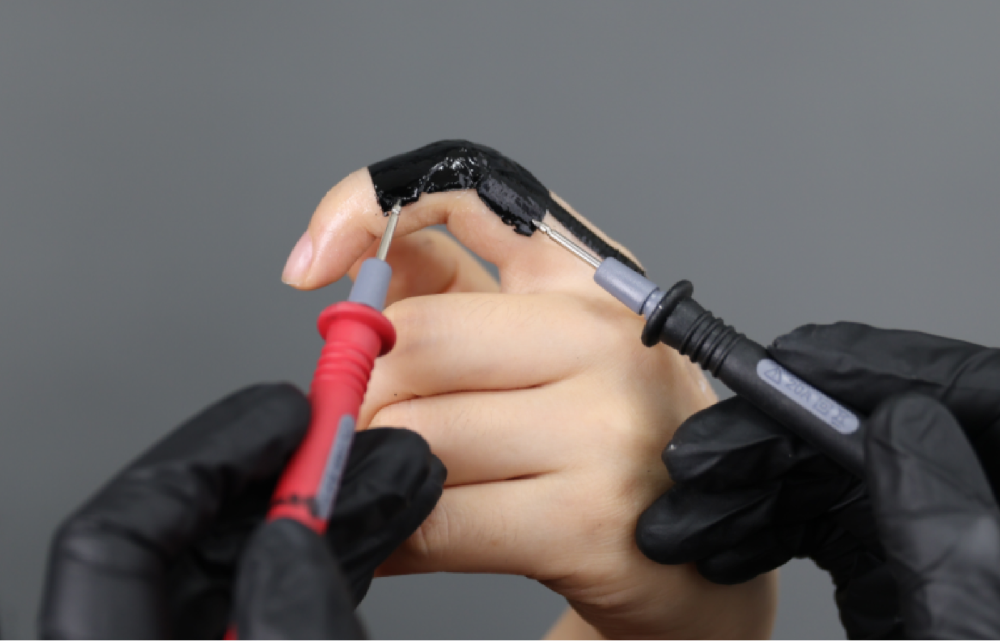
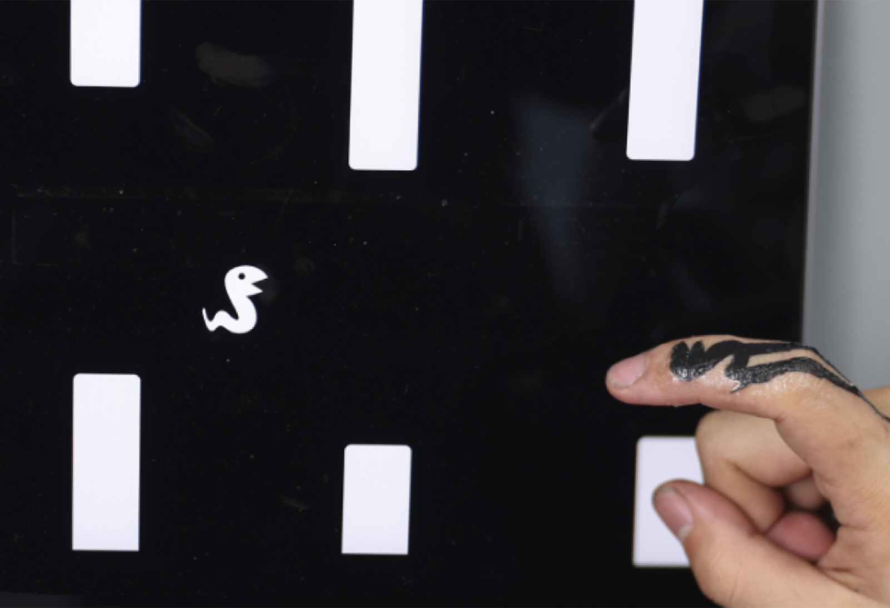
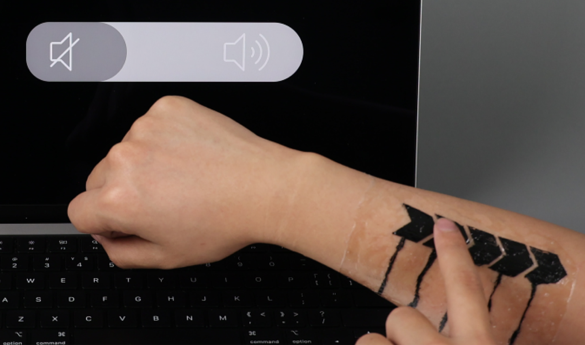
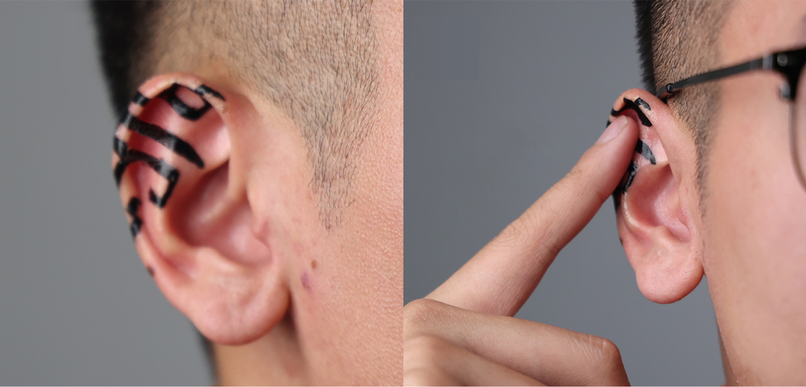

HydroSkin
May 2024
Mengyang Li#, Chuang Chen#, Xin Tang, Kuangqi Zhu, Yue Yang, Shijian Luo, Cheng Yao, Fangtian Ying, Ye Tao, Guanyun Wang*
We introduce HydroSkin, a low-cost, time-efficient, and accessible fabrication technique for on-skin interfaces. By mixing carbon ink with sodium alginate, we developed a low-cost conductive material suitable for hydrographic printing technology. Compared to existing fabrication methods, our approach streamlines the fabrication process and utilizes cost-effective ink without requiring specialized skills. We showcased multiple application scenarios to demonstrate how HydroSkin can enable users to customize the design and quickly fabricate their on-skin interfaces, including a finger game controller, an ear toucher, an arm control slider, and a fatigue monitoring mask.
Publication: ACM CHI Conference on Human Factors in Computing Systems 2024， LBW





